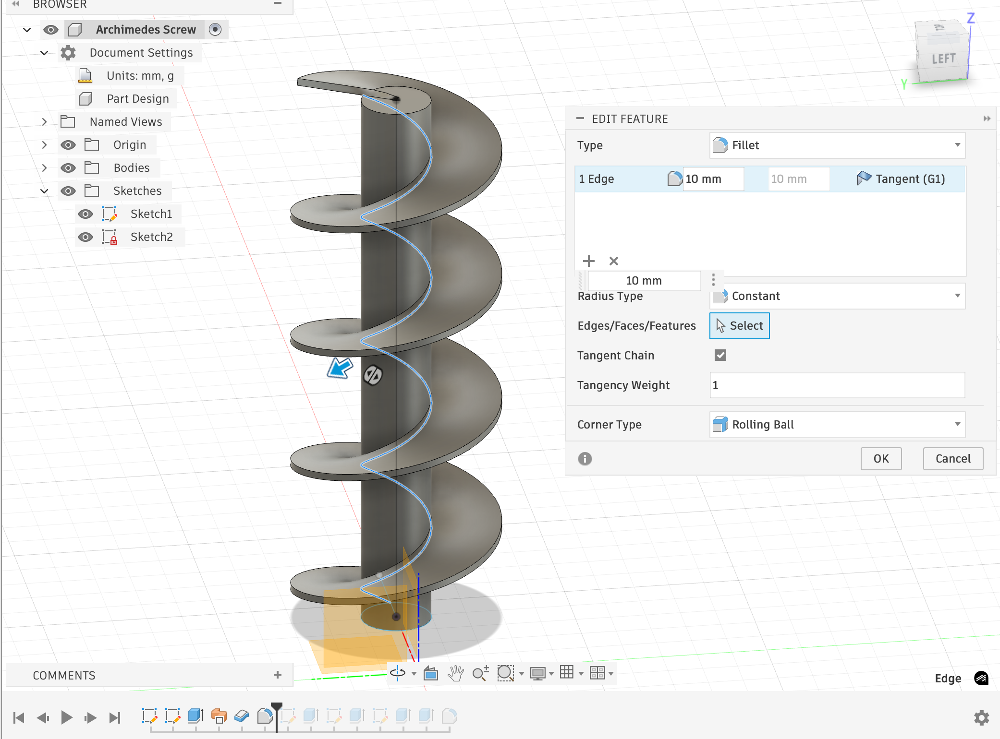
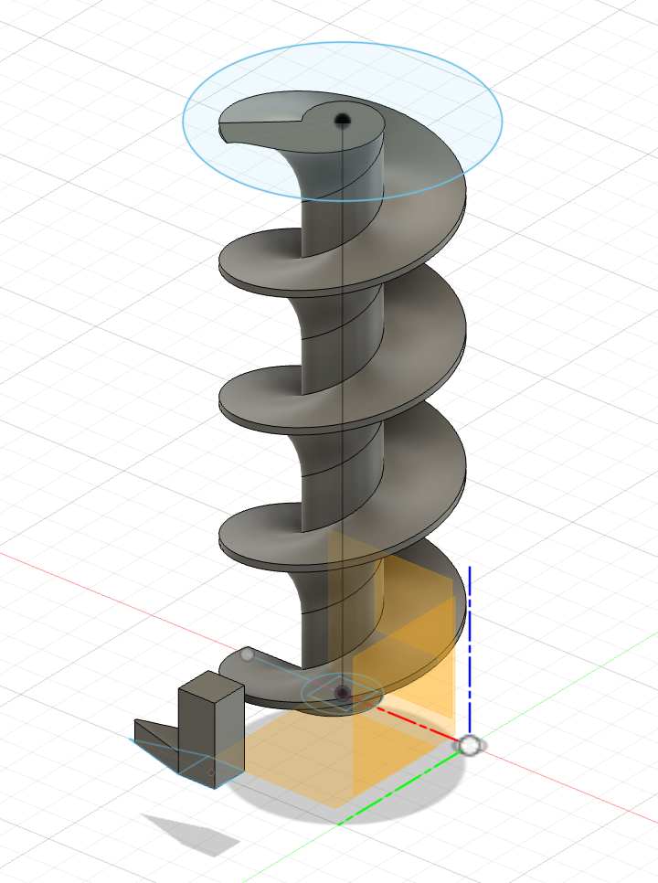

1. For my 3D model, I decideded that I wanted to continue my theme
of coming up with clever ways to elevate a marble, building off my conveyor belt on previous weeks, and
decided to 3D print an archimedes screw. To do this, I first watched this YouTube video which explained
how archimedes screw works... and then another YouTube video that explained some of the tools that I would need
in order to build it effectively in Fusion. I choose the dimensions I did (y x y) because I wanted to make sure the print
succeeded before making it any bigger.


2. For my 3D scan, I decided to scan my roommates bamboo plant because it is both non-reflective and light. Further, I choose to use Scaniverse (because it comes)
highly review on the App Store and 3d Scanner App because it was reccomended on Emma Kay's website as having a very good UI presentation.
I ended up finding the process exciting, although had to end up spending 7+ attempts to get these workable models. I tried both using the lazy-susan wheel
in the lab and swiping my camera around. Swiping my camera around evidently had better results.
3. And finally, here is an updated link to my final project mockup. I decided to pivot from my listed ideas
because sensor processing hasn't been something that we have embraced heavily to instead develop a physical "leaderboard" for my dorm room that functions by
reading something from an IOS app (least screen time, earliest awake, etc) and then using the archimedes screw to lift up a marble and drop it in the correct column to keep
"score." I'll want this to look good so I can keep it in my dorm room.
Materials:
3.1 Wood Laser Cut Boards to guide marbles and frame everything
3.2 3D Printed archimedes screw
3.3 DC Motor to move the archimedes screw
3.4 Servo motor OR dc motor to handle marble dispensing into the correct column (probably servo because more reliable accuracy)
3.5. DC motor to empty the columns by sliding the bottom out.
3.6. Microcontroller to communicate with my computer
3.7. Potentially a sensor at the top to ensure that a marble actually got to the top.
3.8. Another consideration to make it more complicated is to have two types of marbles to dispense and collect.
3.8.1. I think this will come down to me makign the descion of working on the IOS app more or the hardware component more.
While waiting for a 3D print in the lab (I made an ambigram for my grandpa leaving that morning), I decided to play with the 3D scanner by scanning my friend. This proved to be a significant challenge because the scanner hated her hair. We addressed this by giving her a conveniently placed sailors hat.
However, 3D printing proved to be extremely difficult too. I compressed the file as much as I could figure out how to in the scanner software (given that it was 4:30am, this was not a lot), and then revisited the project in Fusion later on using tools like Repair, Reduce, and Scale to have it approach a reasonable physical size and file size. Each action took like 15 minutes, and Fusion crashed 4 times throughout this process. Turning to Claude yielded suggestions like "try Blender," but eventually through sheer luck I was able to get Fusion to fill the holes in the mesh file and shrink it enough to make the print workable. Also, I got very lucky that organic supports in Fusion totally augmented this print and gave the whole thing enough substance to come out very nice!
Check out the results!